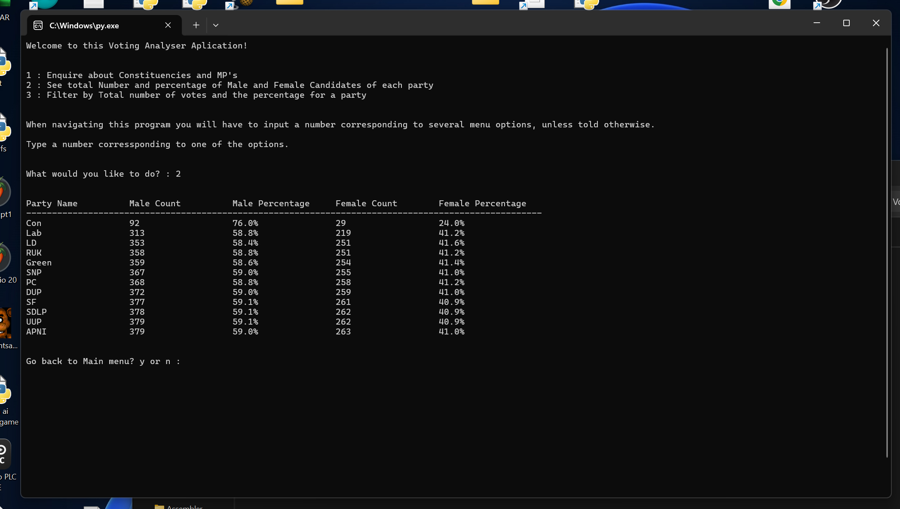
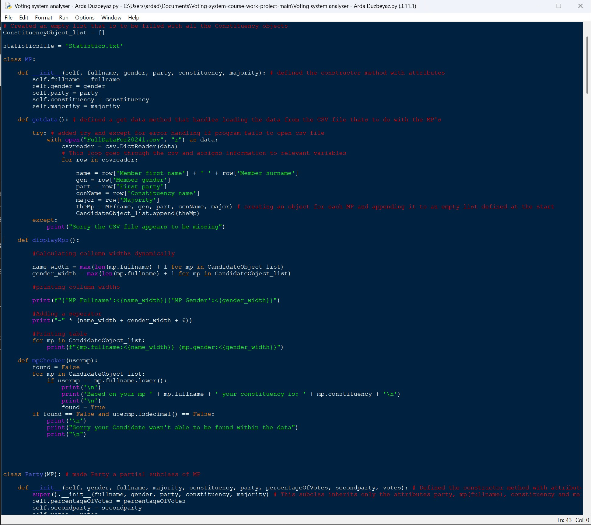
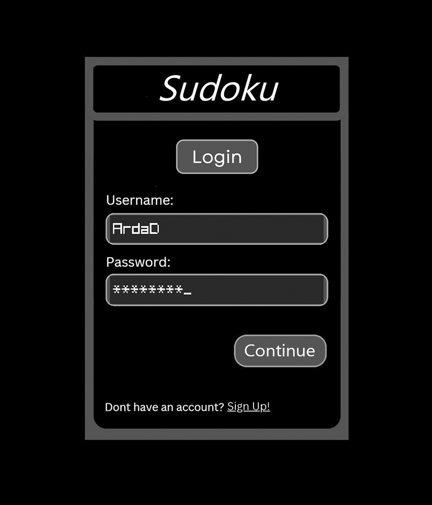
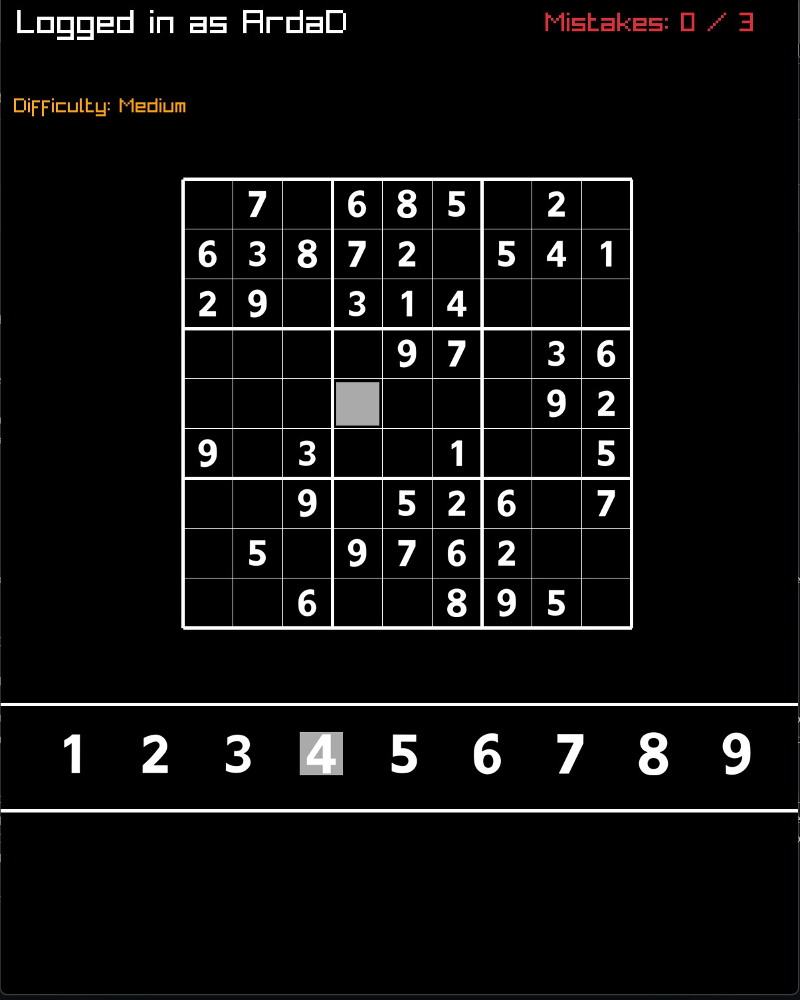
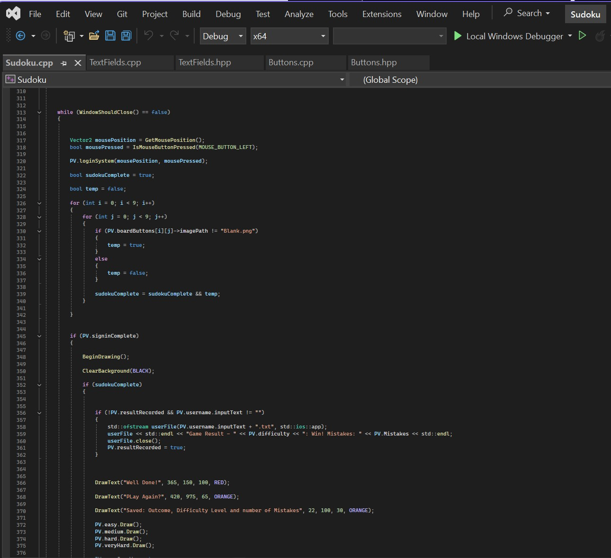
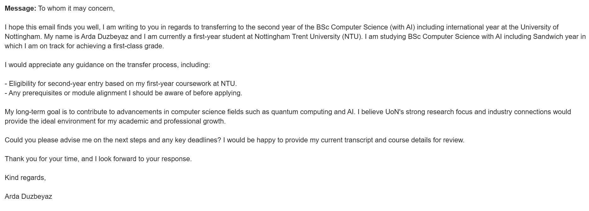

Analysis and Evidence of Own Skills
My Technical Skills
Python Programming Language - I am proficient in the programming language Python this is evident due to having done python even before uniersty and also achieving a first in the first semester in computer science programming with my voting system application. This application is able to read from a file about different constituencies and allows the user to find out and enquire about specific information this project demonstrates my skills in python from file handling, funtions, to object oriented programming


These above images are evidence of my python application. Comparing this skill to whats required to reach my career this is good as Google's quantum language cirq is python based and regular python is also used to implement hybrid quantum-classical algorithms which means having this skill puts me on track. Next steps with this skill, to really reach the requiremtnts I must become even more advanced in python getting good at creating graphical user interfaces.
C++ Programming Language - I have become proficent with the classical language C++ this is evident through the recent project I have submitted for my third semester programming project. You could choose to make whatever you want. I chose to build a sudoku application that was capable of generating random sudokus and the user being able to play graphically on an interactive screen. Object oriented programming was used, using header files and implementation files. The user can also login with a nice user friendly design and play how ever many times they like with their win or loss result being saved to a file under their username. They're also able to choose whatever difficulty they like when playing.



The above images show evidence for my sudoku program with also a screen shot of the visual studio project showing the different header files at the top and a snippet of the code. Comparing this skill to what is required, C++ is required in order to make it in the field of quantum computing which is great. This means I have a good foundation to beign with as C++ is also used to implement hybrid quantum-classical algorithms or interface with quantum hardware. Therefore while what I have is good my next steps would be to become even more advanced at C++ and learn about quantum-classical algorithms.
Overall I have a good starting point and solid foundation when it comes to my technical but in order to reach my goal I must focus on more quantum mechanics related things on a technical level. I need to shift focus onto understanding the mathematics required, quantum mechanics and quantum computing theory
My Professional Skills
Professional emailing - One of my professional skills is beign able to send emails that come are professional and allow me to aquire information I wouldn't have had otherwise. For example due to the career I want to go into I weighed up the options and found that a transfer to the University of Nottingham and study Computer Science with AI may be benefical. Therefore I have to be able to send professional emails that are well written and allow me to obtain the information I need.

The above image shows the email enquiring about the transfer. As you can see I've adressed the person corectly by saying "To whom it may concern" when I don't know who the emial is acctually sent to I have also structured the email in a clear fashion and excited properly by saying "Kind Regards" and then my full name. Comparing this to the professional requirments of my career aspiration this would come under communication as this is an email. This is good however this just shows communication when enquiring about something and not explaining complex quantum concepts to both experts and non-experts. That kind of communication will come through studying more about quantum computing.
Teamwork - Another professional skill of mine is being able to woork and collaborate in a tema this means communicating ideas and working alongside peers. This was evident during my System Analysis and Design module where we worked as a team to come up with a software solution for recruitment companies.
Comnparing this to the required professional skills of quantum computing this also comes under teamwork and collaboration. This is good because it relates to explaining concepts to members of your team which I went through. However I need to have team and collaborative experiences that relate more directly to complex quantum concepts.
Overall I have a good foundation of professional skills and I meet the teamwork and collaboration requirement. I also meet the Critical thinking and flexability in problem-solving requirement as I often demonstrate this during my programming projects. In terms of next steps I should try to do more research in quantum computing this will satisfy the reasearh requirement and most of the other requirements as well.